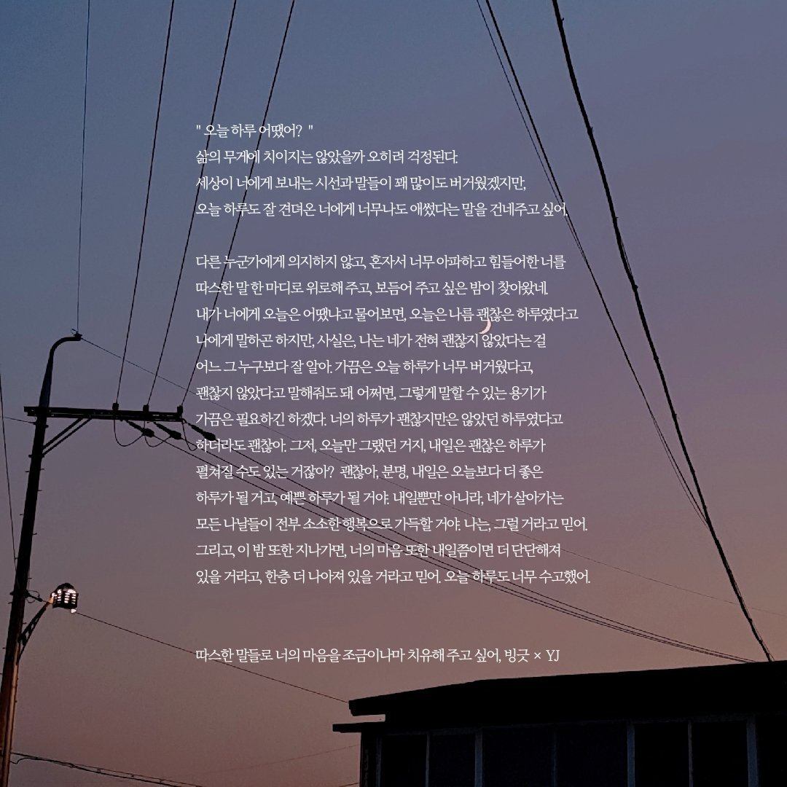
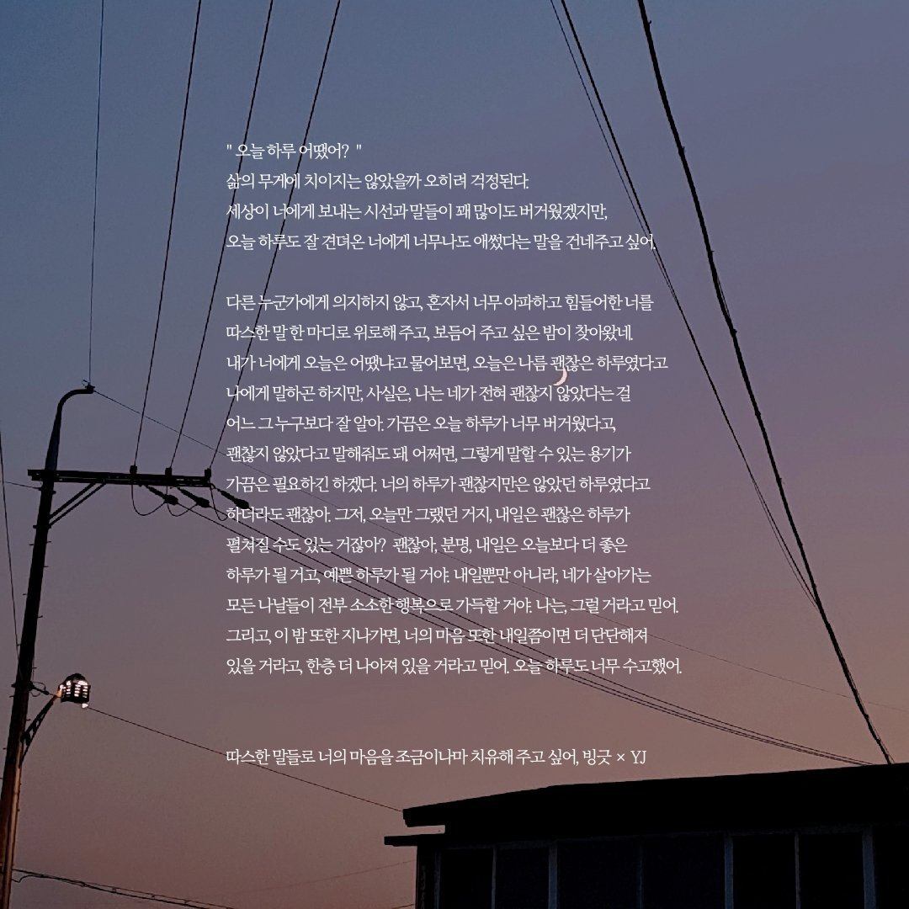

If you want to see more
아래 그림을 클릭하여 더 많은 *hanriv의 작품을 만나 보세요.
Click here
* * * 추천작 * * *
제가 글을 꾸준히 쓸 수 있도록 지금껏 곁에서 함께해 주신 분들의 작품을 소개합니다
다른 분들의 작품
윈터 님의 글

하나하키병
섬세한 시어들과 독특한 발상으로 환상적인 분위기를 띠는 글을 쓰는 분이다. 재치 있는 말로 즐거운 분위기를 조성하며 독창적인 생각을 하는 시인으로 어느 날 갑작스레 모습을 감추었다.
하나하키병
섬세한 시어들과 독특한 발상으로 환상적인 분위기를 띠는 글을 쓰는 분이다. 재치 있는 말로 즐거운 분위기를 조성하며 독창적인 생각을 하는 시인으로 어느 날 갑작스레 모습을 감추었다.
수평 님의 글
그랬던 그 계절이 돌아오네
'아인스크림', '숲'과 '수평'등의 다양한 필명으로 활동하는 성장형 시인이다. 글의 끝부분에서 여운을 남기고 장난스럽지만 타인을 따뜻하게 끌어안을 줄 알기에, 어쩌면 따뜻한 아이스크림이 정말로 존재할지도 모른다는 생각을 안겨준 분이다.
그랬던 그 계절이 돌아오네
'아인스크림', '숲'과 '수평'등의 다양한 필명으로 활동하는 성장형 시인이다. 글의 끝부분에서 여운을 남기고 장난스럽지만 타인을 따뜻하게 끌어안을 줄 알기에, 어쩌면 따뜻한 아이스크림이 정말로 존재할지도 모른다는 생각을 안겨준 분이다.
레몬 님의 글
'한'
하나의 글자로 시작하는 단어를 떠올리며 문장을 짓는 일에 능한 분이다. 내 필명의 첫 자를 본따 만든 작품에서는 레몬 님 특유의 재치가 느껴진다. 뿐만 아니라 다른 장르의 글에도 '레몬'이란 이름처럼 톡톡 튀는 매력과 귀여운 어투가 녹아들어 있다.
'한'
하나의 글자로 시작하는 단어를 떠올리며 문장을 짓는 일에 능한 분이다. 내 필명의 첫 자를 본따 만든 작품에서는 레몬 님 특유의 재치가 느껴진다. 뿐만 아니라 다른 장르의 글에도 '레몬'이란 이름처럼 톡톡 튀는 매력과 귀여운 어투가 녹아들어 있다.
하요 님의 글

I'm okay
짧은 문장으로 생각할 거리를 던져 주는 분이다. 종종 학업에 대한 다짐을 글로 표현하여 주변인들에게 긍정적인 영향을 주기도 하며 '한하요 병'이란 희귀병을 앓고 있어 주변 사람들에게 가끔 심려를 끼치지만 착한 분위기메이커이다.
I'm okay
짧은 문장으로 생각할 거리를 던져 주는 분이다. 종종 학업에 대한 다짐을 글로 표현하여 주변인들에게 긍정적인 영향을 주기도 하며 '한하요 병'이란 희귀병을 앓고 있어 주변 사람들에게 가끔 심려를 끼치지만 착한 분위기메이커이다.
빙긋 님의 글

당신의 미래엔 / 따스한 말들로 너의 마음을 조금이나마 치유해주고 싶어
(좌) : 빙긋 님께서 써 주신 글이다. (우) : 빙긋 님과 YJ 님의 콜라보 글이다. 힘든 사람들에게 따뜻한 말로 위로를 건네는 내용이 담겨 있다.

당신의 미래엔 / 따스한 말들로 너의 마음을 조금이나마 치유해주고 싶어
(좌) : 빙긋 님께서 써 주신 글이다. (우) : 빙긋 님과 YJ 님의 콜라보 글이다. 힘든 사람들에게 따뜻한 말로 위로를 건네는 내용이 담겨 있다.
천락수 님의 글
물에 비친 달빛이...
'남청 크리스마스'에 대한 답례로 천락수 님이 써 주신 글이다. 아직 조금은 서투를지라도 진심 어린 글을 쓰는 분이다. 내 글에 처음으로 혹평을 남긴 사람이었음과 동시에 삶에 영향을 주고 있는 사람이기도 하다.
물에 비친 달빛이...
'남청 크리스마스'에 대한 답례로 천락수 님이 써 주신 글이다. 아직 조금은 서투를지라도 진심 어린 글을 쓰는 분이다. 내 글에 처음으로 혹평을 남긴 사람이었음과 동시에 삶에 영향을 주고 있는 사람이기도 하다.
연우(緣遇) 님의 글
파도가 밀려오다
서온 등의 여러 필명으로 활동했던 분으로 가끔 들러 의미심장한 글을 남기고 가는 파도와 같은 시인이다. 가끔 고민을 함께 나눌 때도 있었지만 앞으로 씩씩하게 잘 헤쳐나갈 수 있을 것 같은 분이다.
파도가 밀려오다
서온 등의 여러 필명으로 활동했던 분으로 가끔 들러 의미심장한 글을 남기고 가는 파도와 같은 시인이다. 가끔 고민을 함께 나눌 때도 있었지만 앞으로 씩씩하게 잘 헤쳐나갈 수 있을 것 같은 분이다.
온새미로 님의 글
시련 없이도 빛날 수 있었다 / 가장 작고도 거대한 기적
우리가 일상적으로 겪는 시련 그 자체를 다루기도, 글 안에 응원의 메시지를 담아 위로를 건네기도 하는 시인이다. 글 특유의 부드러운 색채가 인상적이다.
시련 없이도 빛날 수 있었다 / 가장 작고도 거대한 기적
우리가 일상적으로 겪는 시련 그 자체를 다루기도, 글 안에 응원의 메시지를 담아 위로를 건네기도 하는 시인이다. 글 특유의 부드러운 색채가 인상적이다.
헤헤헤 님의 글
[내 어린고양이와 늙은개]
많은 글을 남기지는 않았지만 다른 사람들의 글을 보고 감상평을 정성껏 남기는, 나그네와 같은 시인이자 따뜻한 사람이었다. 당시 나의 글 활동에 큰 영향을 준 사람 중 하나. 힘들었던 시기를 응원해주고 어느 순간 정말로 나그네처럼 사라져 버렸지만 필명에 묻은 웃음소리는 아직 이 자리에 남아 메아리처럼 들리는 듯하다.
[내 어린고양이와 늙은개]
많은 글을 남기지는 않았지만 다른 사람들의 글을 보고 감상평을 정성껏 남기는, 나그네와 같은 시인이자 따뜻한 사람이었다. 당시 나의 글 활동에 큰 영향을 준 사람 중 하나. 힘들었던 시기를 응원해주고 어느 순간 정말로 나그네처럼 사라져 버렸지만 필명에 묻은 웃음소리는 아직 이 자리에 남아 메아리처럼 들리는 듯하다.
* 참고
시를 감상하는 법을 알고 싶으시다면 아래 영상을 참고하세요